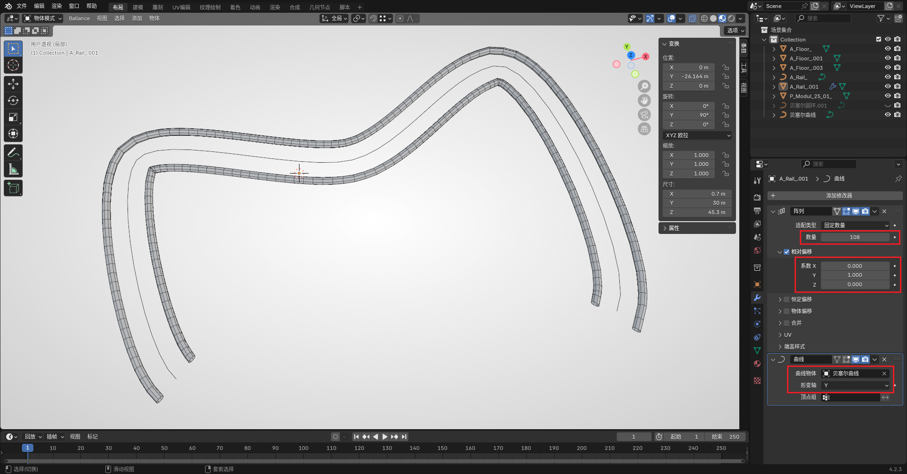

Blender 放样方法#
在 3ds MAX 中 创建复杂的路面、轨道 一般使用放样的方式。Blender 中也有相似的操作，主要有以下两种：
- 曲线放样
- 阵列修改器 + 曲线修改器
第一种方法与 max 中的放样操作更为相似，但有时也需视情况灵活使用两种方法。
曲线放样#
创建任意一段曲线后，再创建钢轨的截面。钢轨截面可以直接在 添加 - Rails - Rail Section 创建。也可根据钢轨参数手动创建。如果是使用插件直接创建的截面，首先需要将其绕X轴旋转90度（即让截面位于XY平面），然后应用其旋转（Ctrl + A 然后选择旋转），再将其转化为曲线。随后在曲线的 数据 - 几何数据 - 倒角 中，选择 物体，然后将物体设置为钢轨的截面即可。
在 数据 - 形状 - 预览分辨率U 处可以设置每两个点之间的分段数。若制作的弧形轨道棱角分明时，可以提高此处的数值以创建更多分段。
切记：
- 曲线不能随意缩放，否则放样结果可能不准确。
- 用此方法创建的轨道、路面目前需要手动归组。
基于修改器#
此方法需要一条较短的钢轨作为基础物体，可以直接使用插件添加一段钢轨（不是钢轨截面）。并创建一段曲线作为备用。
首先在钢轨的修改器面板，添加一个阵列修改器（生成 - 阵列）。其中的 相对偏移 处需要手动设置，设置方法为需要往哪个轴延伸，就将哪个轴填为 1（反方向则填 -1）。随后将 数量 改为一个较大的值。这些参数随后还可以动态调整更改，所以不必在意具体数值。
随后继续添加一个曲线修改器（形变 - 曲线）。将 曲线物体 设置为提前创建的曲线，将 形变轴 改为和刚刚相对偏移相同的轴（即刚刚填 1 或 -1 的轴）。此时应该就能看到物体阵列会沿曲线分布。
此时可以根据生成物体的效果进行进一步操作：
- 若分布的长度不够，可以增加阵列修改器的数量参数。
- 若棱角过于明显，可以按
Tab编辑顶点将原钢轨缩短。 - 若满意最终效果，也可将所有修改器应用，将网格固定。（建议在做完相关设计后再应用，以防需要更改参数）
此方法构建的物体无需重新归组，但在曲线存在拐角较大处效果较差，建议用于构建拐弯相对平滑的物体。
